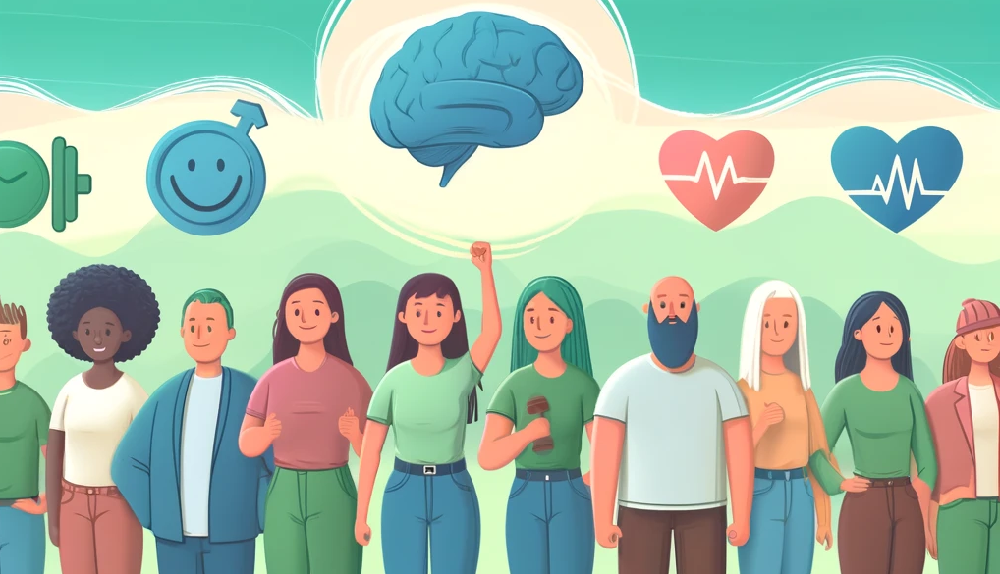

Digital training for building resilience:
Systematic review, meta‐analysis, and meta‐regression
Coping with stress: In times of crises such as the COVID-19 pandemic and geopolitical conflicts, mental health issues have climbed to an all time high. Stress is a primary driver of those, which is why building a psychological “defense shield” against stress and its consequences is crucial. Resilience is the scientific term for this defense shield and describes the ability to successfully overcome adversity. Since former studies have shown that resilience can be trained in physical face-to-face settings, this meta-analysis investigates whether digitally delivered resilience training can also be efficacious.
Overview
Focus of the study
Investigating the efficacy of digital resilience training.
Target group
The general public, healthcare professionals (both concerning their patients’ and their own resilience) and game developers.
Effect size
Moderate to strong effects in favor of digital resilience training.
Further notable results
Internet-based interventions with a flexible training schedule showed the most promising effects compared to other intervention types
What is this study about?
Stress is a primary driver of mental health issues such as depression or anxiety. Especially tough times like the COVID-19 pandemic tend to leave their marks on our collective mental well-being. Building resilience or, in other words, psychological resistance against stress is crucial for preventing the development of mental health problems. This not only affects the general public, but also healthcare professionals, with 26% reporting low resilience. People with a higher degree of resilience enjoy be tter well-being and health, tend to be more productive and report more academic success. Given the importance of resilience, understanding the different conceptualizations is essential. Resilience can be perceived from a trait, process or outcome perspective. The trait perspective describes it as a component of one’s personality, something stable over time, while the process perspective views it as something volatile and dynamic, and focusses on how resilient one feels at the moment. The outcome perspective merely is interested in whether one is able to bounce back from adversity or mental health issues and not so much in how one perceives it subjectively. Irrespective of conceptual variance, research found that people are able to train their resilience. The question that remains to be answered is “How do you train it?”.
According to resilience theory, resilience is characterized by a multitude of components and mechanisms, ranging from the cellular to the societal level. The majority of existing resilience interventions, however, have been focussing on the psychosocial domain, targeting personal and relational factors. Fostering cognitive flexibility, for instance, marks one personal approach. Cognitive flexibility refers to the ability to reframe a stressful situation and thereby finding alternative solutions to it. In terms of relational interventions, strengthening one’s social support and relationships was shown to increase resilience. Since more conclusive evidence was found with respect to these psychosocial factors, the current meta-analysis focuses on them. Due to the advancements in telecommunication technologies and a general rise in digital literacy, the provision of resilience interventions via digital media has increased. This potentially offers comprehensive accessibility of such interventions and is therefore important to be investigated.
The current meta-analysis assesses the efficacy of resilience trainings delivered via computers, mobile devices or the internet. While face-to-face interventions with physical presence have been shown to improve one’s resilience both as a therapeutic measure and a preventive tool for the general population, it remains unclear whether this is also true in a digital context. While both modalities (face-to-face and digital) offer the possibility of synchronous communication, it has been shown that the lack of physical presence can attenuate a learner’s interest and motivation in an online paradigm. In light of the improvements in the digital infrastructure, the affinity of the general public towards digital technologies and a continuous increase in mental health issues, it is crucial to evaluate the potential of digital interventions to foster resilience. Therefore, this meta-analysis intends to (1) assess the effectiveness of digital resilience training and (2) extract the most important features for designing such interventions.
What does this study find?
This Meta-Analysis found an overall moderate increase in resilience directly after the intervention and an overall large effect on resilience up to 6 months after the resilience training. The effect directly after the intervention was greater when the intervention did not include cognitive flexibility skills ,when the intervention was done over the internet and when participants could do the training at their own pace.
Regarding anxiety, depressive symptoms and stress this meta-analysis reported that resilience training has no effect on anxiety and stress symptoms directly after the intervention and only a small effect on anxiety after 6 months. The resilience training could reduce depressive symptoms directly after the intervention and after 6 months with a small effect.
Qualitiy of the meta-analysis
The meta-analysis itself does a good job of inspecting the quality of the evidence. The review was prepared in accordance with the PRISMA guidelines and prospectively registered in the PROSPERO database. It uses several measures to evaluate the overall quality of the evidence. However there is an exaggeration in the abstract of the meta-analysis, succumbing to the bad practice of hyping one’S results.
Quality of the evidence
The evidence is not credible. The funnel plot and the Egger regression test indicate a publication bias. The risk of bias was not satisfactory for 19 out of the 22 included studies. Using the GRADE criteria the quality of the evidence ranges from very low to low.Heterogeneous findings and variation in the population and intervention characteristics further complicate the picture. Altogether more high-quality studies need to be conducted before conclusive assertions can be made.The meta-analysis suggest that reported effect sizes may be inflated to a large extent.
Conclusion for teaching practice
There are no substantial conclusions that can be drawn from this meta-analysis due to the dubious nature of the credibility of the findings. Expressed in the words of the authors, this means that: “more attention is warranted to improve the quality of future trials to ensure that grounded inferences may be made from its conclusions.”.
Study example
A therapist-guided smartphone app for major depression in young adults

References
Ang, W. H. D., Chew, H. S. J., Dong, J., Yi, H., Mahendren, R., & Lau, Y. (2022). Digital training for building resilience: Systematic review, meta‐analysis, and meta‐regression. Stress and Health, 38(5), 848-869.